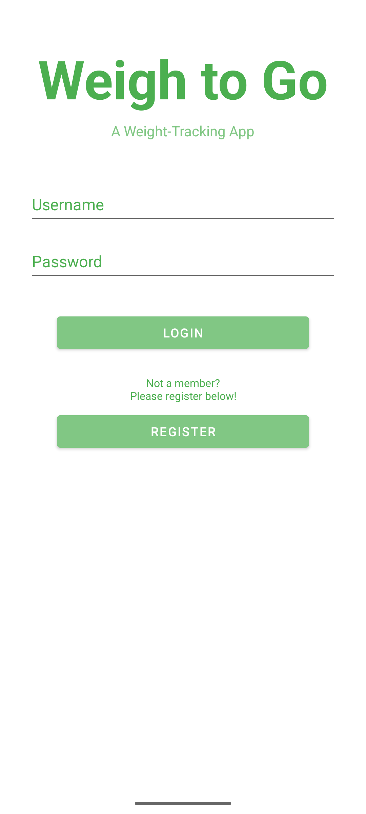
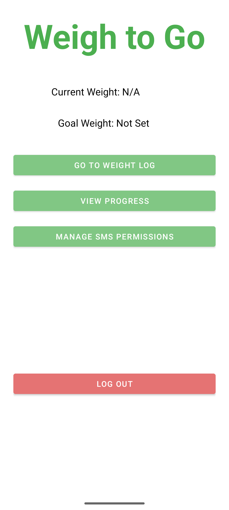
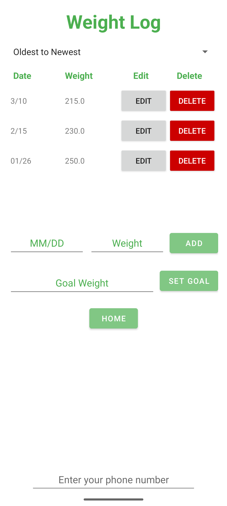
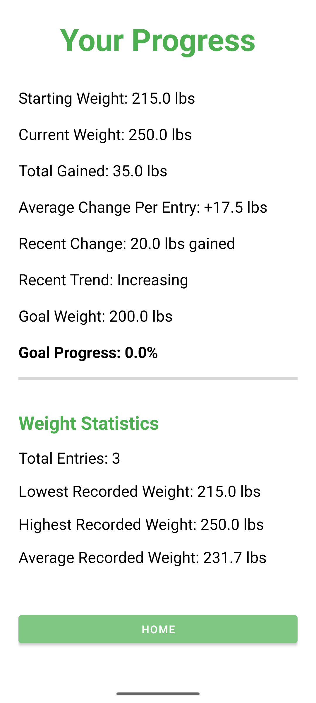
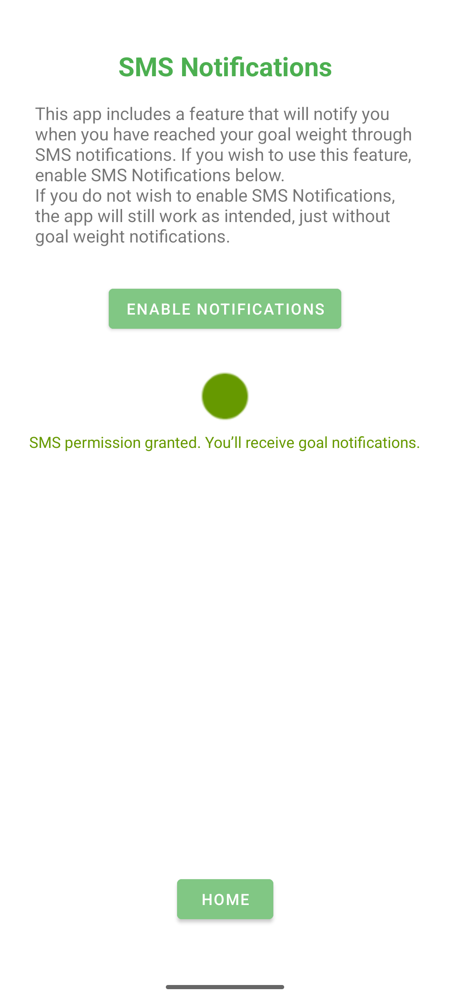

Weigh To Go

App Overview
Weigh To Go is an Android weight-tracking application that I originally created in CS 360: Mobile Architecture and Programming. The application allows users to record their weight, set personal goals, and monitor their progress over time.
I selected Weigh To Go as the main artifact for my CS 499 capstone because it gave me the opportunity to improve an existing project while demonstrating skills in software design and engineering, algorithms and data structures, and databases.
Final Enhanced Application
This final version of Weigh To Go combines all three CS 499 enhancements: software design and engineering, algorithms and data structures, and databases.
The completed application includes improved input validation, safer record management, weight history sorting, progress analysis, and user-specific database storage.
Download Final Enhanced Application
Login and Registration
Users can create an account or log in to an existing account to access their weight information. The application uses account-specific database records to keep each user's weight history and goals separate.

Home Screen
The home screen provides an overview of the user's current weight and goal weight. It also serves as the main navigation area, allowing users to access their weight log and progress information.

Weight Log
The weight log allows users to add, edit, and delete weight records. Users can also organize their history by date or weight using different sorting options.
During my capstone enhancements, I improved input validation, added safer deletion, and implemented sorting using Java collections and comparators.

Weight Progress
The progress screen analyzes saved weight records to help users understand how their weight has changed over time.
It displays starting and current weights, total and average changes, recent trends, and progress toward a goal. Additional statistics, including the lowest, highest, and average recorded weights, are calculated using database queries.

SMS Permissions
Weigh To Go includes an optional SMS notification feature that can notify users when they reach their goal weight.
I improved the permission handling during my software design enhancement so the application can respond more clearly when SMS permission is unavailable or a notification cannot be sent.